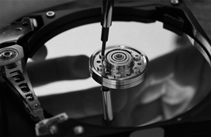
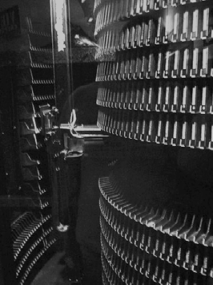
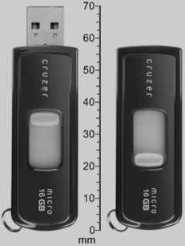
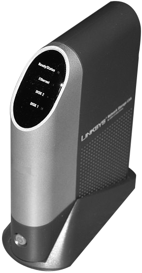

Gestió de dispositius d'emmagatzematge
Els dispositius d’emmagatzematge secundari i terciari enregistren la informació dels sistemes informàtics d’una manera permanent.
Podem considerar, dins l’esquema general d’un sistema informàtic, que aquests dispositius d’emmagatzematge formen part de la memòria externa i es diferencien de la memòria interna (dispositiu d’emmagatzematge primari) en el fet que emmagatzemen dades independentment de si hi ha alimentació elèctrica o no. En canvi, la memòria interna només és capaç de contenir informació mentre l’equip té alimentació elèctrica.
Capacitat i transferència
Per exemple: un disquet de 5,25 polzades inicialment tenia una capacitat de 160 kB, que podia transferir a una velocitat aproximada de 20 o 30 kB/s, i es feia servir en ordinadors de fa uns 25 anys. En canvi, ara, no és estrany trobar memòries flaix USB amb capacitats de 16 o fins i tot 32 GB, amb velocitats de transferència de fins a 30 MB/s o més.
La quantitat d’informació que poden contenir aquests dispositius i la velocitat d’accés a aquesta informació han anat augmentant d’una manera gairebé exponencial.
La gestió correcta d’aquests dispositius d’emmagatzematge és fonamental per a la preservació de les dades que contenen.
Jerarquia i classificació dels dispositius d'emmagatzematge
En general, quan parlem dels dispositius d’emmagatzematge, fem referència a sistemes capaços de desar grans quantitats d’informació, com, per exemple, els discos òptics (CD, DVD, blu-ray disc…), i també dispositius magnètics, com ara els discos durs, o bé les cintes magnètiques que habitualment es fan servir com a suport per a còpies de seguretat.
Capacitats dels dispositius d'emmagatzematge
La capacitat d’aquests dispositius ha evolucionat exponencialment, des d’uns 160 kB dels primers disquets de 5,25 fins a 2 TB dels discos durs actuals.
Darrerament, també s’ha estès molt l’ús de dispositius que utilitzen memòria flaix i que generalment fan servir el port USB.
Com podem veure en la figura, els dispositius d’emmagatzematge ocupen un segon esglaó en el sistema informàtic, però tenen una comunicació directa amb la unitat central de processament.
La velocitat de transferència d’informació entre els dispositius d’emmagatzematge i la unitat central de processament és inferior que la velocitat de transferència d’informació entre la memòria principal i la unitat central de processament. Per exemple, la velocitat de transferència d’informació entre la memòria principal i la unitat central de processament pot ser de l’ordre de 6 GB/s i, en canvi, l’última especificació dels discos SATA permet una velocitat màxima de transferència de fins a 600 MB/s, tot i que els discos durs difícilment poden assolir més de 100 MB/s. És a dir, que la velocitat de transferència entre la memòria principal i la unitat central de processament és de l’ordre de 50 o 100 vegades més gran que la dels dispositius d’emmagatzematge, aproximadament.
Aquesta diferència tan important quant a la velocitat de transferència determina el fet que els dispositius d’emmagatzematge no es poden fer servir d’una manera habitual per executar els programes, sinó per desar-hi els resultats del processament de dades.
Emmagatzematge secundari
En general, les unitats òptiques i les unitats magnètiques formen part de l’emmagatzematge secundari, en el sentit que no és accessible directament per la UCP (unitat central de processament), però en canvi hi pot accedir mitjançant canals d’entrada/sortida, de manera que transfereixi la informació volguda fent servir dispositius controladors.
- 
- Disc dur sense la tapa protectora. Hi podem veure els plats recoberts de material magnètic i els capçals de lectura/escriptura.
Per exemple, per tal d’accedir a la informació desada en un disc dur, és necessari que la UCP faci una petició al controlador de disc (actualment, la majoria són Serial ATA). El controlador serà qui enviarà els impulsos necessaris al disc dur per tal de fer l’operació de lectura/escriptura.
En el cas dels discos durs, aquests controladors solen integrar-se en les plaques base, si bé, en casos més especials, poden situar-se en targetes d’expansió que se situen en ranures d’expansió del tipus PCI o PCI-Express.
El temps d’accés a una informació emmagatzemada en un disc dur és de l’ordre de mil·lisegons (mil·lèsimes de segon). En contrast, el temps per accedir a una informació en la memòria principal és de l’ordre de nanosegons (mil·lèsima de milionèsima de segon).
Darrerament, però, s’està estenen l’ús de dispositius anomenats SSD (unitats de disc d’estat sòlid), que combinen la utilització de memòria flaix amb la interfície d’un disc dur convencional (habitualment Serial ATA), de manera que obté temps d’accés molt inferiors, consums més baixos i velocitats de transferència més elevades, malgrat que inicialment el cost és molt superior al dels discos durs convencionals. En la figura podem veure i comparar diferents tipus d’emmagatzematge en discos durs.
Una altra forma d’utilització dels dispositius d’emmagatzematge secundari (habitualment els discos durs o també memòries flaix USB) és la memòria virtual.
La memòria virtual és una tècnica que poden emprar els sistemes operatius actuals, que consisteix a fer servir el dispositiu d’emmagatzematge secundari com si fos memòria principal, quan els programes necessiten més memòria principal que la que físicament està disponible en el sistema. A mesura que la memòria principal s’omple, el sistema mou les parts de la memòria principal menys utilitzades a dispositius d’emmagatzematge secundari, i els recupera posteriorment quan es necessitin.
Velocitat de transferència
Podem mesurar la velocitat de transferència d’un disc dur amb programari específic, però també podem obtenir aquesta informació des del web del fabricant.
Aquesta metodologia permet executar més programes que els que en principi serien possibles donada la capacitat limitada de la memòria principal, però també degrada el rendiment global del sistema, atès que l’accés als discos durs és força més lent que a la memòria principal.
Emmagatzematge terciari
- 
- Cartutxos amb cintes magnètiques que contenen dades amb un braç robòtic que es mou al fons. Té una altura aproximada d'1,8 metres.
Podríem considerar que hi ha un tercer nivell d’emmagatzematge. En aquest cas, tenim una biblioteca formada per dispositius d’emmagatzematge terciari que han de ser inserits en el sistema informàtic mitjançant un sistema robotitzat segons les demandes del sistema. És a dir, l’accés a la informació es produeix d’una manera totalment automatitzada, sense intervenció humana.
Les dades que contenen aquests dispositius d’emmagatzematge terciari (que poden ser cintes, discos durs) habitualment es copien en dispositius d’emmagatzematge secundari abans de fer-les servir. Aquests tipus de dispositius s’utilitzen per accedir a informació que es fa servir poc, perquè és un sistema molt més lent que un dispositiu d’emmagatzematge secundari: el temps d’accés és de l’ordre de 5 a 60 segons en comptes de l’ordre de 10 mil·lisegons.
Es fan servir en magatzems d’informació molt grans, als quals s’accedeix sense intervenció humana, d’una manera totalment automatitzada.
Un exemple d’això serien els sistemes automatitzats que serveixen per a música i que contenen una gran quantitat de CD (jukebox), o bé, biblioteques de cintes amb dades.
Emmagatzematge fora de línia
Els sistemes d’emmagatzematge fora de línia són un mitjà d’emmagatzematge de dades que no està sota el control d’una unitat de processament. Per tal d’accedir a la informació continguda en aquests dispositius cal la intervenció humana: una persona ha d’inserir el dispositiu d’emmagatzematge en un aparell lector i, un cop fetes les operacions necessàries, cal que la persona el desconnecti manualment.
- 
- Memòria flaix USB amb una capacitat de 16 GB. El connector USB es pot amagar quan no està connectat a un ordinador.
Normalment, es fan servir per transferir informació entre diferents sistemes informàtics, perquè sovint aquests dispositius són fàcilment transportables. En cas d’un desastre, com que la localització d’aquests dispositius no és la mateixa que la dels del sistema informàtic, és possible que no es vegin afectats i poden ajudar a recuperar la informació.
En els ordinadors actuals, molts dispositius d’emmagatzematge secundari o terciari es fan servir també com a dispositius d’emmagatzematge fora de línia.
Podem esmentar com a exemples actuals d’aquests dispositius els discos òptics, les memòries flaix, els discos durs extraïbles, els cartutxos de cintes amb dades. Fa temps es feien servir disquets o discos zip.
Emmagatzematge distribuït i en xarxa
L’emmagatzematge distribuït consisteix a desar la informació (normalment en forma de fitxers) en un o més ordinadors anomenats servidors, els quals fan accessible aquesta informació a altres ordinadors anomenats clients, els quals hi accedeixen com si fos emmagatzemada localment.
L’avantatge d’aquesta tècnica és que es faciliten molt les còpies de seguretat (només s’han de fer còpies de la informació continguda en els servidors) i, a més, redueixen costos, ja que no cal donar gaire capacitat d’emmagatzematge a cadascun dels clients. També permet el treball col·laboratiu, ja que en simplificant l’administració.
- 
- Sistema d'emmagatzematge en xarxa: conté un programari específic que permet als diferents usuaris d'aquest sistema accedir-hi mitjançant la interfície de xarxa ethernet i utilitzar l'espai d'emmagatzematge que ofereix.
Per tal d’implementar aquest sistema, cal que el sistema operatiu tingui suport per a aquest tipus d’emmagatzematge i es fa necessària una xarxa informàtica per tal de connectar els servidors i els clients. Això implica que s’ha de fer un bon disseny de la xarxa per evitar que es produeixin errors quan els clients intenten accedir a la informació del servidor.
Els servidors d’informació, en el cas de sistemes operatius basats en Windows, fan servir les carpetes compartides (que poden ser en un servidor de domini).
En el cas de sistemes operatius de tipus UNIX o GNU/Linux, poden fer servir el sistema de fitxers en xarxa (network file system, o simplement NFS), o també el protocol SAMBA, que permet que clients que funcionen amb Windows es connectin a servidors UNIX/Linux, i a l’inrevés.
Els servidors de fitxers poden ser ordinadors complets amb tots els seus components; en aquest cas, podrien portar a terme altres funcions a part de la compartició de fitxers, o bé poden ser servidors dedicats: els dispositius d’emmagatzematge en xarxa (en anglès NAS, o network attached storage).
Sistemes d'emmagatzematge redundant
Els sistemes d’emmagatzematge redundant s’implementen mitjançant el que s’anomena RAID (redundant array of inexpensive disk), en català: ‘conjunt de discos barats redundants’. Aquesta és una tecnologia que permet assolir alts graus de fiabilitat en l’emmagatzematge d’informació a partir d’un conjunt de discos durs de baix cost que ens podem trobar en qualsevol ordinador personal (PC).
Recentment, aquest terme s’ha revisat i s’ha canviat la paraula inexpensive per independent.
L’objectiu del RAID consisteix a dividir i replicar la informació entre diferents discos durs i, a part d’incrementar la fiabilitat de la transferència, també en pot augmentar la velocitat.
Quan múltiples discos físics formen part d’un RAID, el sistema operatiu els veu com un de sol.
Els sistemes RAID impliquen una quantitat de càlculs important quan es fan operacions de lectura/escriptura. En els sistemes més cars, hi ha una targeta controladora específica que s’encarrega de portar a terme aquests càlculs. Aquest cas es coneix amb el nom de RAID de maquinari.
En alguns casos, el mateix sistema operatiu o els controladors més simples necessiten el microprocessador central per ajudar a fer tots aquests càlculs, la qual cosa fa baixar el rendiment del sistema. Això es coneix com a RAID de programari.
Els controladors RAID més senzills sovint només ens ofereixen els nivells de RAID 0 i 1, que requereixen menys processament.
Els sistemes RAID, amb redundància de dades, poden continuar funcionant encara que un (o en algun cas més d’un) dels discos falli. Quan això succeeix, es reemplaça el disc defectuós per un de nou, el RAID es reconstrueix i el sistema continua funcionant normalment.
Alguns sistemes s’han d’apagar per canviar un disc defectuós i d’altres, suporten l’intercanvi en calent (hot swapping), que permet canviar un disc defectuós sense haver d’apagar el sistema. Aquest darrer sistema d’intercanvi en calent (hot swapping) es fa servir sovint en sistemes d’alta disponibilitat (high availability), que necessiten estar funcionant ininterrompudament.
Grau de suport de RAID
Gairebé totes les plaques base actuals suporten RAID 0 i 1. Per configurar-los cal consultar el manual de la placa base i entrar a la BIOS del sistema abans d’instal·lar-hi el sistema operatiu.
Els sistemes RAID si bé ofereixen un nivell de seguretat més elevat que els que no ho són, no eliminen la necessitat de crear còpies de seguretat del sistema, perquè es poden perdre dades sense que el disc en el qual estan desades es faci malbé físicament. Per exemple, les dades podrien ser sobreescrites per un mal funcionament del sistema operatiu, o bé per un usuari amb intencions dolentes.
Redundància
La redundància en els sistemes que utilitzen RAID s’aconsegueix o bé escrivint la mateixa informació en diversos discos (conegut com a mirall o mirror), o bé escrivint dades extra, com la paritat de les dades en algun dels discos que formen el RAID.
D’aquesta manera, s’aconsegueix que, malgrat que un dels discos del RAID falli, això no impliqui una pèrdua de dades.
Podem combinar els discos de diferents maneres, segons les nostres necessitats de velocitat, de capacitat i de protecció contra la pèrdua de dades. A aquestes combinacions, hi fem referència amb els diferents nivells de RAID.